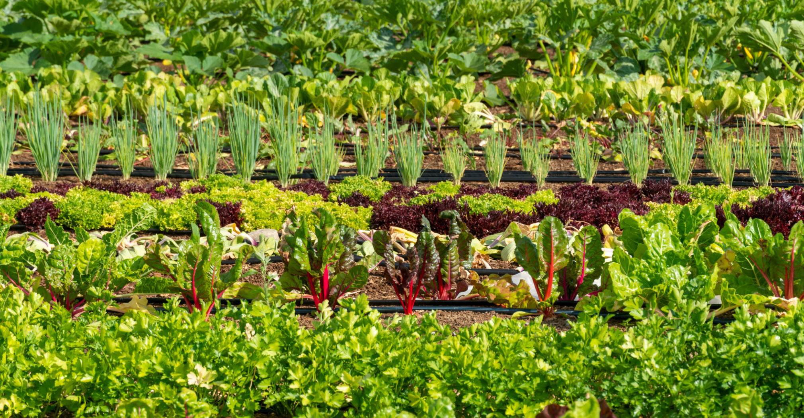
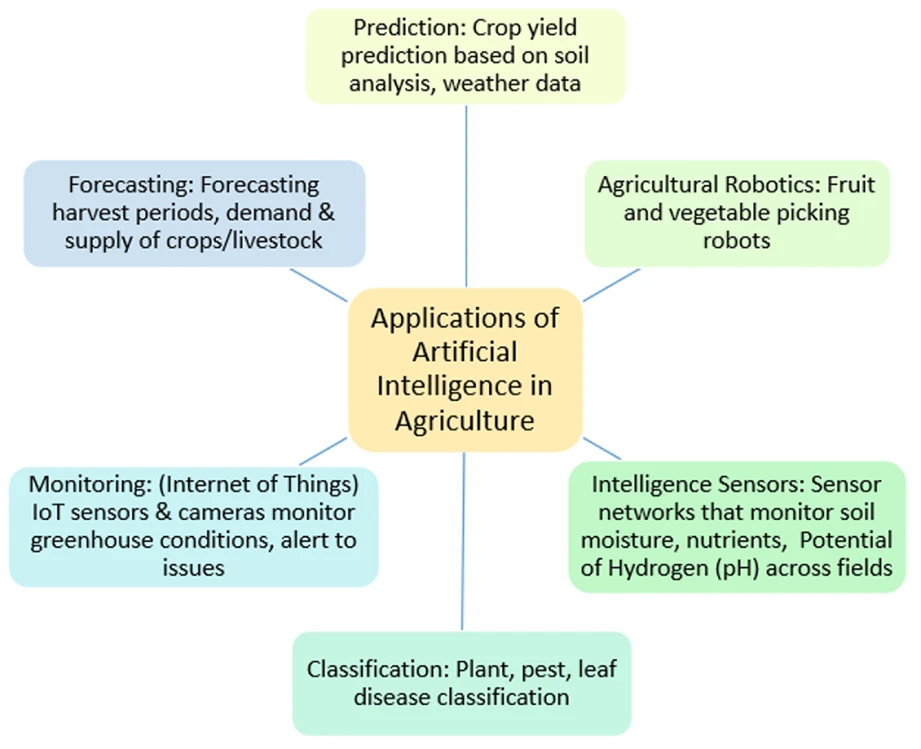
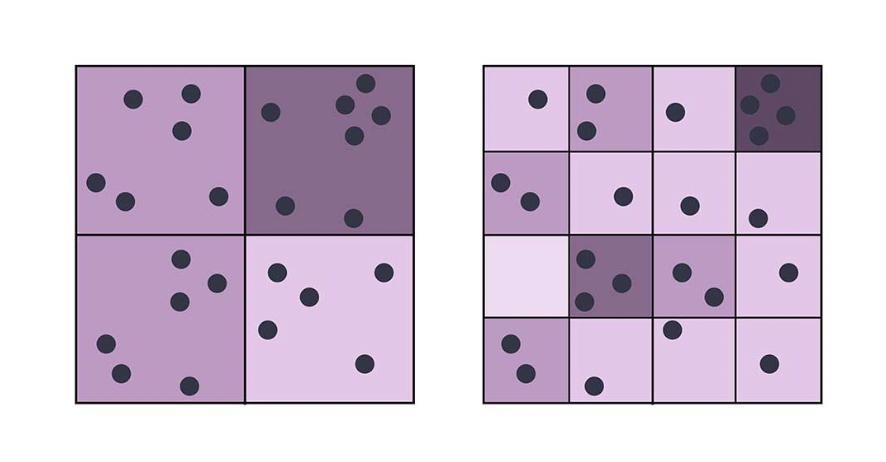

![]()
Introduction
A world without farmers markets is certainly extreme, but not outside of the realm of possibility if data bias within Artificial Intelligence used for agriculture goes addressed. These farmers markets, full of local produce, specialty vegetables, and jars of honey, are run by small farmers who can’t always afford to keep up with the newest wave of technology. Small farmers also have the local knowledge to be stewards of the natural systems within their farms, maintaining soil health, managing water wisely, and promoting biodiversity (Robinson 2024). But how are they to compete with larger farms that use Artificial Intelligence to optimize yields, determine the best time for seed planting, and predict weather conditions (Mayuravaani et al. 2024)? What happens when the data used behind the scenes is largely from one geographical location, to our small farmers and our environment as a whole?

Overview of AI in Agriculture
There are many ways that AI has been studied and incorporated into farming systems in the agriculture and food industry, as shown in this diagram based upon a detailed review of literature and publications over the period of 2010 to 2023 (Mayuravaani et al. 2024).

Stemming from these use cases are many types of data bias, from socioeconomic biases where AI is trained on data mostly from economically viable farms with high yield and only accessible to already financially well off farmers, to language bias where AI is trained on data from mainly one language, making it not as accessible to farmers that speak others. For this case study, we will focus on geographic data bias, where the majority of the training data used for agriculture models is collected from particular regions, which may not represent the diversity of conditions and challenges faced by farmers in different locations (Mayuravaani et al. 2024).
Case study
The case study we will look at focuses on wheat yield prediction in Kazakhstan, titled “Improve State-Level Wheat Yield Forecasts in Kazakhstan on GEOGLAM’s EO Data by Leveraging A Simple Spatial-Aware Technique” (Nhu et al. 2023). The goal of this paper was to make the most accurate crop yield predictions by addressing the cross-region yield heterogeneity in Kazakhstan, as accurate yield forecasting is important for making informed policies and long-term decisions for food security. This study shows how location heavily impacts the quality of predictions made by machine learning.
The machine learning algorithms in this paper were trained on Earth Observation (EO) data from the GEOGLAM Crop Monitor, which lists key EO data products being used in agricultural monitoring. They used multiple EO predictors such as phenological information from the MODIS NDVI, MODIS Leaf Area Index (LAI), temperature, precipitation, SMAP soil moisture, and evaporative stress index (ESI). They also collected regional records of wheat yields. This data is largely satellite data, which can certainly be useful where field information is limited but can also introduce issues if factors such as local microclimates or unique farm practices are not incorporated.
The researchers noticed that the AI models didn’t predict wheat yields equally well across all regions of Kazakhstan. Some states were over-predicted and others under-predicted, because the model was biased toward the regions that had values closer to the mean yield. In the paper, they explained that “the high yields can be caused by factors typically not covered in satellite data, such as political and economical forces that allow some provinces to be the main wheat producer of the country (Nhu et al. 2023).”
To fix this, they calculated a state-wise bias. They looked at the error in multiple training/validation splits (k-fold cross-validation), and estimated a correction for each state. When making predictions, they adjusted the model with this state-specific correction and reduced their Root Mean Square Error (RMSE) by an average of 8.1% to 9.76% across the different provinces.
This method is important because it directly addresses geographic bias. Without the state-wise bias correction, the AI predictions would be misleading in regions that were underrepresented in the data. Importantly, this case highlights the risks for local farms within the provinces, as models trained on larger-scale information such as satellite data can miss nuances in climate and economics. In terms of management decisions and policy making, this could cause resources to be allocated ineffectively and increase the risk of food security.
Reflection and applications
The solution to the problem of geographic bias in the provinces of Kazakhstan was extremely complex and resulted in a decreased amount of prediction error. Expanding this case study to all AI in agriculture, it seems very difficult to ensure that geographical bias is not at play in more widespread contexts. I think that the use of satellite data is also a complex topic, because it is very important for gathering information about the climate and crop health of areas that have less capacity for on-the-ground measurements, but it must be used with care before extrapolating to other regions for decision-making.
A more specific problem with using geospatial data that is applicable to this case study is the Modifiable Areal Unit Problem (MAUP). This is referring to the sensitivity of statistical results to the level of spatial aggregation of the source data (Baden, Noonan, and Turaga 2007). In the case study, state-level variation in environmental data and the resulting yield predictions were not applicable to the entire region of Kazakhstan, or were at least more inaccurate when applied at that aggregation level.

Some publications have mentioned the use of GIS as a solution to geographic bias, as it would enable farmers to map the crop conditions and environmental factors, optimizing resource use like fertilizers, water, and pesticides based on specific field needs (Mayuravaani et al. 2024). While this might be a step in the right direction for collecting data from smaller farmers, GIS comes with many biases as well. GIS is a technology that can be difficult to access and learn, especially for smaller users that are not as industry-oriented (Scott and Cutter, n.d.). Additionally, because of the MAUP, the data cannot always be applied on the scale of an individual farmer (Scott and Cutter, n.d.). Once the data is aggregated and out of the hands of small farmers, will the results still reflect the details of their environment, and will the questions they have still be answered?
Solutions
We can discuss two general solutions related to the geographical bias found in the case study. The study did a good job of being transparent about what data was incorporated into the model, and how the model was altered to make predictions at a state level. This transparency allows others to replicate their methods and potentially reduce geographical bias in their own research. One framework that emphasizes this principle is the Trusted AI Framework, which encourages AI to be as transparent as possible and states that individuals have the right to know how a decision that impacts them was made (Mandrake et al. 2022).
Secondly, if we want to analyse the satellite data and make predictions with technology such as GIS, we can take strides to making sure small farmers are involved with the entire research process through community data projects. These are a concept that promotes Environmental Data Justice, an emerging framework focused on environmental data generation, access, and application of equitable environmental outcomes (Vera et al. 2019). Community data projects provide communities with data and tools to conduct their own analyses enabling them to advocate for their own environmental needs and related solutions. It might not have been in the scope of this case study, but incorporating the individual farmers of the provinces could have turned their research into a community-wide effort, with more data from a variety of locations that could in turn be used to make more accurate predictions about agricultural questions of interest.
References
Citation
@online{robillard2025,
author = {Robillard, Ava},
title = {EDS 242: {Could} You Imagine a World Without Farmers
Markets?},
date = {2025-12-10},
url = {https://avarobillard.github.io/posts/2025-12-10-eds242},
langid = {en}
}